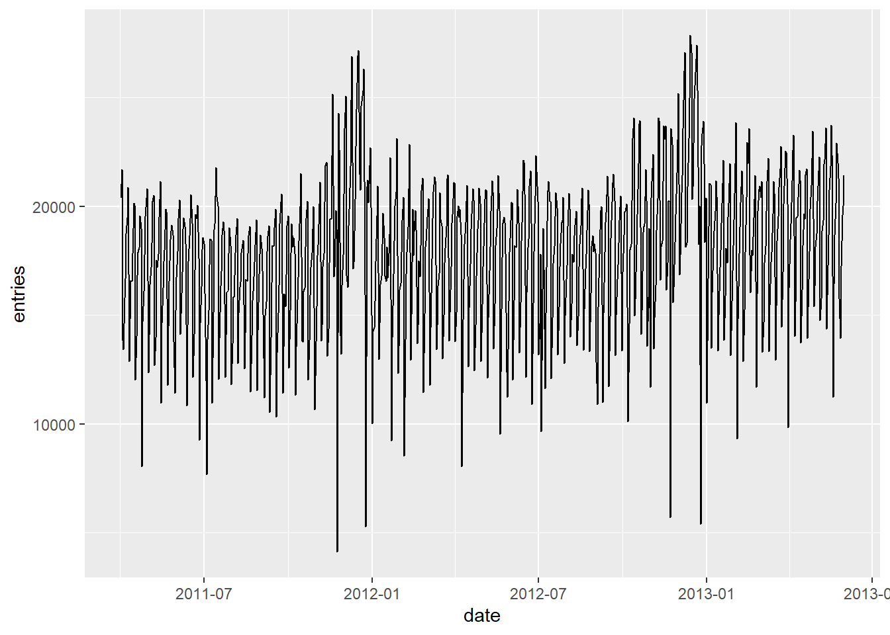
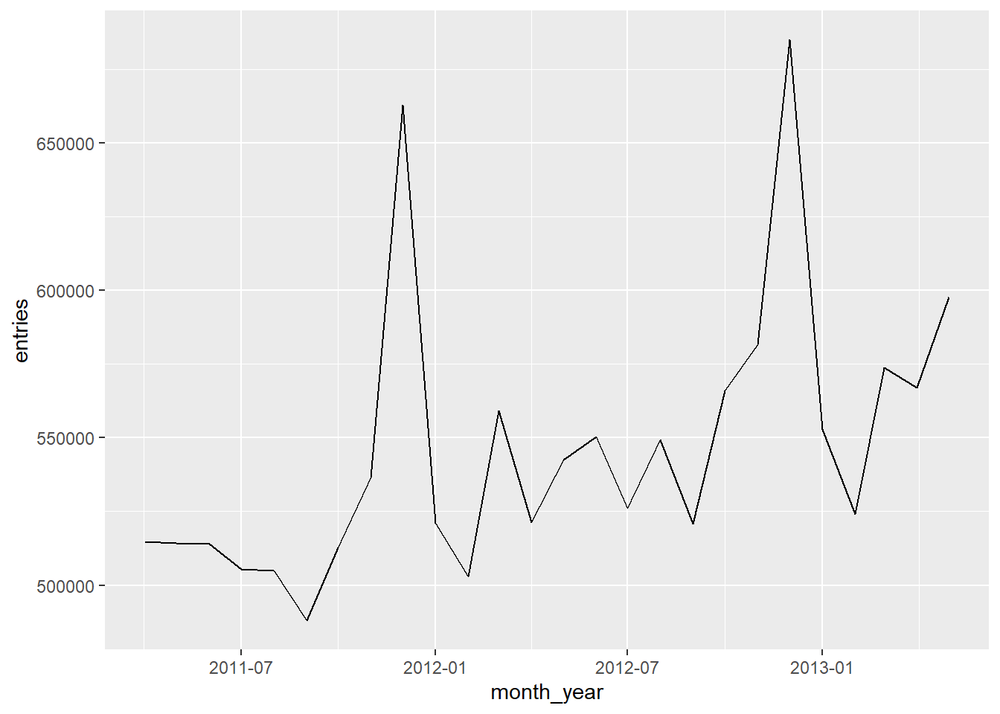
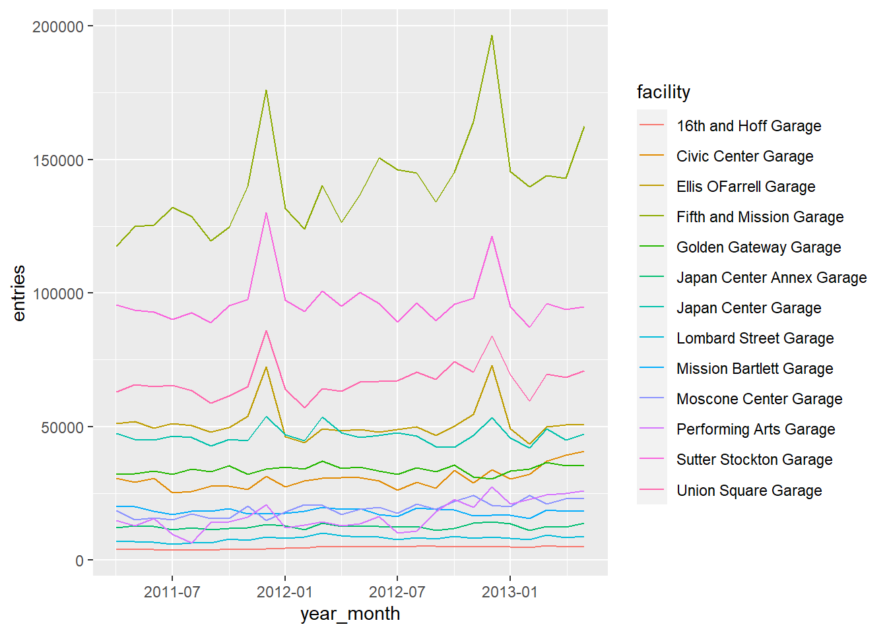

library(tidyverse) #library for dealing with tabular data
library(lubridate) #library for handling datesExploratory Data Analysis
We frequently work on datasets created by others for their own needs. We gather some of those datasets when accessible to us, and explore whether the data can be useful to us or whether we can dig up useful insights from data. This process if often called Exploratory Data Analysis, and is one of the most important and frequently performed activities in (urban) analytics.
Borrowing from R for Data Science (1e),
EDA is an iterative cycle in which we:
- Generate questions about data.
- Search for answers by visualizing, transforming, and modelling data.
- Use what we learn to refine your questions and/or generate new questions.
There is no exact recipe for EDA, as it depends on answers we seek and the nature of the data. However, some operations are more frequent than others in typical EDA.
- Understanding data
- Checking data quality
- Cleaning data to fit our needs
- Transforming, visualizing, and modeling data
Essentially, you perform various analytical operations to ask questions to your data depending on your need and the nature of the data. EDA is a Socratic approach in that sense.
About the data
SFpark is the parking demand management program in San Francisco. The data we’re using are entries and exits from public parking garages from 2011-2013, available here.
First, we need to load the libraries we will be using.
The data are packaged as a CSV (comma separated values) file, which is just a text file where each line is a row, and the columns are separated by commas.
df <- read_csv("https://github.com/kshitizkhanal7/plan372-exercises/raw/main/sfpark/data/sfpark.csv")Rows: 21261 Columns: 6
── Column specification ────────────────────────────────────────────────────────
Delimiter: ","
chr (4): usage_type, date, facility, district
dbl (2): entries, exits
ℹ Use `spec()` to retrieve the full column specification for this data.
ℹ Specify the column types or set `show_col_types = FALSE` to quiet this message.A peek at the data
head(df)
## # A tibble: 6 × 6
## usage_type date entries exits facility district
## <chr> <chr> <dbl> <dbl> <chr> <chr>
## 1 Transient 4/1/2011 189 161 16th and Hoff Garage Mission
## 2 Transient 4/2/2011 175 175 16th and Hoff Garage Mission
## 3 Transient 4/3/2011 161 182 16th and Hoff Garage Mission
## 4 Transient 4/4/2011 126 126 16th and Hoff Garage Mission
## 5 Transient 4/5/2011 103 105 16th and Hoff Garage Mission
## 6 Transient 4/6/2011 128 127 16th and Hoff Garage MissionWe have six columns:
date: the date the data were recorded
facility: the garage where the data were recorded
district: the district (neighborhood) where the garage is
usage_type: the type of payment (e.g. monthly pass, transient/hourly)
entries, exits: the number of cars that entered and exited the garage that day that used that type of payment
Tests for data quality
We need to ensure the data is fit-for-purpose. We can check for completeness, duplication, and consistency.
Completeness
# Checking missing values in each column
colSums(is.na(df))
## usage_type date entries exits facility district
## 0 0 0 0 0 0This is a very good dataset in terms of completeness. There are no NA values.
Duplication
# Checking for duplicate records
duplicated_records <- df %>%
filter(duplicated(.))
duplicated_records
## # A tibble: 0 × 6
## # … with 6 variables: usage_type <chr>, date <chr>, entries <dbl>, exits <dbl>,
## # facility <chr>, district <chr>There are zero duplicate rows. All observations are unique.
Sanity
We can also check if observations have values we can expect.
# Checking consistency of Age column
df %>%
filter(entries < 0 | is.integer(entries))
## # A tibble: 0 × 6
## # … with 6 variables: usage_type <chr>, date <chr>, entries <dbl>, exits <dbl>,
## # facility <chr>, district <chr>Number of entries is not negative nor are the entries decimals.
Start with the simple questions about data
What garages do we have?
unique(df$facility)
## [1] "16th and Hoff Garage" "Civic Center Garage"
## [3] "Ellis OFarrell Garage" "Fifth and Mission Garage"
## [5] "Golden Gateway Garage" "Japan Center Garage"
## [7] "Japan Center Annex Garage" "Lombard Street Garage"
## [9] "Mission Bartlett Garage" "Moscone Center Garage"
## [11] "Performing Arts Garage" "Sutter Stockton Garage"
## [13] "Union Square Garage"How many cars enter a garage on an average day
mean(df$entries)
## [1] 667.6645Understanding group characteristics
Grouped data analysis is a very common pattern - rather than a mean over the entire dataset, we may want a mean by groups. For instance, the median being so different from the mean suggests outliers - perhaps one very large garage. Let’s look at the mean entries by garage.
df |>
group_by(facility) |>
summarize(mean_entries=mean(entries))
## # A tibble: 13 × 2
## facility mean_entries
## <chr> <dbl>
## 1 16th and Hoff Garage 151.
## 2 Civic Center Garage 333.
## 3 Ellis OFarrell Garage 839.
## 4 Fifth and Mission Garage 2074.
## 5 Golden Gateway Garage 555.
## 6 Japan Center Annex Garage 206.
## 7 Japan Center Garage 763.
## 8 Lombard Street Garage 132.
## 9 Mission Bartlett Garage 298.
## 10 Moscone Center Garage 314.
## 11 Performing Arts Garage 274.
## 12 Sutter Stockton Garage 1334.
## 13 Union Square Garage 989.But this could be misleading. Does each row represent a single day at a single garage?
Are we actually computing the mean of above?
We can use the group_by and summarize functions to create a dataset that shows total entries and exits for each day, and create a new table with this information.
total_entries <- df |>
group_by(date, facility) |>
summarize(entries=sum(entries), exits=sum(exits))
## `summarise()` has grouped output by 'date'. You can override using the
## `.groups` argument.
head(total_entries)
## # A tibble: 6 × 4
## # Groups: date [1]
## date facility entries exits
## <chr> <chr> <dbl> <dbl>
## 1 1/1/2012 16th and Hoff Garage 64 96
## 2 1/1/2012 Civic Center Garage 3 379
## 3 1/1/2012 Ellis OFarrell Garage 1352 1373
## 4 1/1/2012 Fifth and Mission Garage 3566 4748
## 5 1/1/2012 Golden Gateway Garage 5 549
## 6 1/1/2012 Japan Center Annex Garage 431 440Now we can calculate the mean entries by garage, using this new dataset.
Focusing on what’s interesting to us
Maybe we don’t want to look at the entire city, but only at garages in the Civic Center neighborhood. We can filter the data and repeat the above analysis.
civic_center_data <- filter(df, district == "Civic Center")Now, repeat the above analysis to compute total entries by day, and take the daily average, using only data from Civic Center use group_by and summarize to compute means.
Repeat the process, looking only at garages in the Mission
Handling dates
Another dimension of this dataset that we have not explored is the date column. Before we can work with dates, however, we have to parse the column.
Every column in a table has a type (for instance, integer, decimal number, string). read_csv tries to guess the best type for each field. We can see what types are used in our table by printing the table to the console. The types are printed just below the column names.
head(total_entries)
## # A tibble: 6 × 4
## # Groups: date [1]
## date facility entries exits
## <chr> <chr> <dbl> <dbl>
## 1 1/1/2012 16th and Hoff Garage 64 96
## 2 1/1/2012 Civic Center Garage 3 379
## 3 1/1/2012 Ellis OFarrell Garage 1352 1373
## 4 1/1/2012 Fifth and Mission Garage 3566 4748
## 5 1/1/2012 Golden Gateway Garage 5 549
## 6 1/1/2012 Japan Center Annex Garage 431 440read_csv has read the date as string. These columns only store the letters, and don’t know that they represent dates. Before we can use the dates, we need to parse the dates. To parse dates, we will use the lubridate library
- the
mdyfunction parses dates in month/day/year format
total_entries <- mutate(total_entries, date=mdy(date))Display the table again, to check the types
head(total_entries)
## # A tibble: 6 × 4
## # Groups: date [1]
## date facility entries exits
## <date> <chr> <dbl> <dbl>
## 1 2012-01-01 16th and Hoff Garage 64 96
## 2 2012-01-01 Civic Center Garage 3 379
## 3 2012-01-01 Ellis OFarrell Garage 1352 1373
## 4 2012-01-01 Fifth and Mission Garage 3566 4748
## 5 2012-01-01 Golden Gateway Garage 5 549
## 6 2012-01-01 Japan Center Annex Garage 431 440Let’s look at the mean entries by year, to look for trends over time
First, we need to extract the year from the date column, and assign it to a new column. We previously used mutate for this; this line uses $ notation which is another way of doing the same thing.
total_entries$year = year(total_entries$date)Make sure it worked
unique(total_entries$year)
## [1] 2012 2013 2011Now, look at mean entries by garage and year
group_by(total_entries, facility, year) |>
summarize(entries=mean(entries))
## `summarise()` has grouped output by 'facility'. You can override using the
## `.groups` argument.
## # A tibble: 39 × 3
## # Groups: facility [13]
## facility year entries
## <chr> <dbl> <dbl>
## 1 16th and Hoff Garage 2011 129.
## 2 16th and Hoff Garage 2012 162.
## 3 16th and Hoff Garage 2013 166.
## 4 Civic Center Garage 2011 925.
## 5 Civic Center Garage 2012 977.
## 6 Civic Center Garage 2013 1191.
## 7 Ellis OFarrell Garage 2011 1736.
## 8 Ellis OFarrell Garage 2012 1659.
## 9 Ellis OFarrell Garage 2013 1616.
## 10 Fifth and Mission Garage 2011 4324.
## # … with 29 more rowsThe year_totals table is in “long” format - one row for each facility for each year. It would be easier to read in “wide” format: one row for each facility and one column for each year.
The column names are taken from the field named in names_from, and the values from the field named in values_from now, look at mean entries by garage and year.
group_by(total_entries, facility, year) |>
summarize(entries=mean(entries)) |>
pivot_wider(names_from=year, values_from=entries)
## `summarise()` has grouped output by 'facility'. You can override using the
## `.groups` argument.
## # A tibble: 13 × 4
## # Groups: facility [13]
## facility `2011` `2012` `2013`
## <chr> <dbl> <dbl> <dbl>
## 1 16th and Hoff Garage 129. 162. 166.
## 2 Civic Center Garage 925. 977. 1191.
## 3 Ellis OFarrell Garage 1736. 1659. 1616.
## 4 Fifth and Mission Garage 4324. 4758. 4865.
## 5 Golden Gateway Garage 1086. 1107. 1159.
## 6 Japan Center Annex Garage 399. 416. 423.
## 7 Japan Center Garage 1514. 1541. 1515.
## 8 Lombard Street Garage 232. 282. 280.
## 9 Mission Bartlett Garage 603. 595. 581.
## 10 Moscone Center Garage 536. 654. 736.
## 11 Performing Arts Garage 453. 522. 787.
## 12 Sutter Stockton Garage 3189. 3205. 3090.
## 13 Union Square Garage 2160. 2228. 2237.Exercise: repeat the above, but get the per-month mean rather than per year, to show seasonal trends. You should have a table with rows for each garage and columns for January, February, etc.
Testing our hunches
Weekdays vs weekends Some garages may be more popular on weekdays than on weekends. We need to repeat the above analysis, but we want a mean for weekends and a mean for weekdays. Lubridate does not have a weekend function, so we need to use the day of week function to make a new weekend column. First, we can create a day of week column.
total_entries$day_of_week <- wday(total_entries$date, label=T)Look at how the days of week are abbreviated
unique(total_entries$day_of_week)
## [1] Sun Tue Thu Wed Fri Sat Mon
## Levels: Sun < Mon < Tue < Wed < Thu < Fri < Satnow, we can recode that to weekday/weekend
total_entries$weekend <- recode(total_entries$day_of_week,
"Mon"="weekday",
"Tue"="weekday",
"Wed"="weekday",
"Thu"="weekday",
"Fri"="weekday",
"Sat"="weekend",
"Sun"="weekend")
head(total_entries$weekend)
## [1] weekend weekend weekend weekend weekend weekend
## Levels: weekend < weekdayCalculate the means
group_by(total_entries, facility, weekend) |>
summarize(entries=mean(entries)) |>
pivot_wider(names_from=weekend, values_from=entries)
## `summarise()` has grouped output by 'facility'. You can override using the
## `.groups` argument.
## # A tibble: 13 × 3
## # Groups: facility [13]
## facility weekend weekday
## <chr> <dbl> <dbl>
## 1 16th and Hoff Garage 182. 139.
## 2 Civic Center Garage 468. 1212.
## 3 Ellis OFarrell Garage 1754. 1647.
## 4 Fifth and Mission Garage 5170. 4411.
## 5 Golden Gateway Garage 810. 1229.
## 6 Japan Center Annex Garage 473. 386.
## 7 Japan Center Garage 1846. 1399.
## 8 Lombard Street Garage 262. 265.
## 9 Mission Bartlett Garage 559. 609.
## 10 Moscone Center Garage 370. 732.
## 11 Performing Arts Garage 444. 590.
## 12 Sutter Stockton Garage 2409. 3484.
## 13 Union Square Garage 2200. 2208.Visualization
This data would be more interesting if it were on a graph. To make graphs in R, most people use the ggplot2 library, which is part of tidyverse.
Let us create a dataset that shows how many entries to all garages there were on each day
citywide_entries = group_by(total_entries, date) |>
summarize(entries=sum(entries))Create a plot using the total_entries table. We define an “aesthetic” that the date will be the x axis, and the number of entries will be the y axis
ggplot(citywide_entries, aes(x=date, y=entries)) +
geom_line()
Wow, that’s a mess - there’s too much day-to-day variation to understand trends. Let’s group the data by month and year, and plot again
- the
floor_datefunction returns the beginning of whatever period you put in - in this case, the beginning of the month
citywide_entries$month_year <- floor_date(citywide_entries$date, unit="month")
monthly_entries = group_by(citywide_entries, month_year) |> summarize(entries=sum(entries))
ggplot(monthly_entries, aes(x=month_year, y=entries)) +
geom_line()
This is an interesting plot, but it would be more interesting to see it by garage. We can do this by using data that is not summed up to citywide level, an then telling ggplot to group by the facility
total_entries$year_month = floor_date(total_entries$date, unit="month")
garage_month_entries = group_by(total_entries, facility, year_month) |>
summarize(entries=sum(entries))
## `summarise()` has grouped output by 'facility'. You can override using the
## `.groups` argument.look at the result of that call
garage_month_entries[1:20,] #looking at the first 20 observations
## # A tibble: 20 × 3
## # Groups: facility [1]
## facility year_month entries
## <chr> <date> <dbl>
## 1 16th and Hoff Garage 2011-04-01 4156
## 2 16th and Hoff Garage 2011-05-01 3996
## 3 16th and Hoff Garage 2011-06-01 3854
## 4 16th and Hoff Garage 2011-07-01 3777
## 5 16th and Hoff Garage 2011-08-01 3633
## 6 16th and Hoff Garage 2011-09-01 3599
## 7 16th and Hoff Garage 2011-10-01 4231
## 8 16th and Hoff Garage 2011-11-01 3877
## 9 16th and Hoff Garage 2011-12-01 4292
## 10 16th and Hoff Garage 2012-01-01 4411
## 11 16th and Hoff Garage 2012-02-01 4391
## 12 16th and Hoff Garage 2012-03-01 5184
## 13 16th and Hoff Garage 2012-04-01 4961
## 14 16th and Hoff Garage 2012-05-01 4959
## 15 16th and Hoff Garage 2012-06-01 4995
## 16 16th and Hoff Garage 2012-07-01 4991
## 17 16th and Hoff Garage 2012-08-01 5121
## 18 16th and Hoff Garage 2012-09-01 5240
## 19 16th and Hoff Garage 2012-10-01 4931
## 20 16th and Hoff Garage 2012-11-01 4878Now, plot the data but tell ggplot to group by facility, use separate colors for each facility
ggplot(garage_month_entries, aes(x=year_month, y=entries, group=facility, color=facility)) +
geom_line()
A closer look at Usage types
The data include several usage types - monthly passes, transient users, etc.
Credits: This tutorials borrows heavily and expands on EDA tutorial taught in PLAN 372 Spring 2023 by Matthew Wigginton Bhagat-Conway.